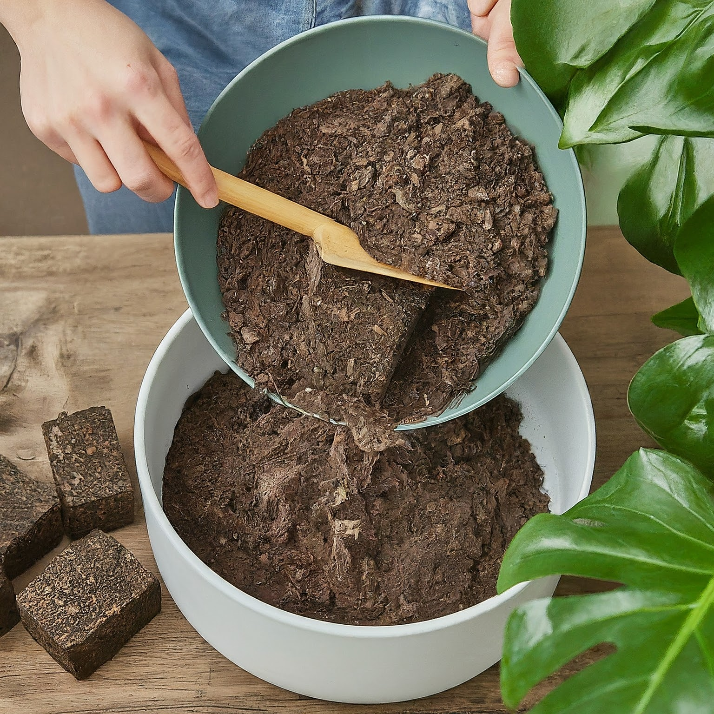
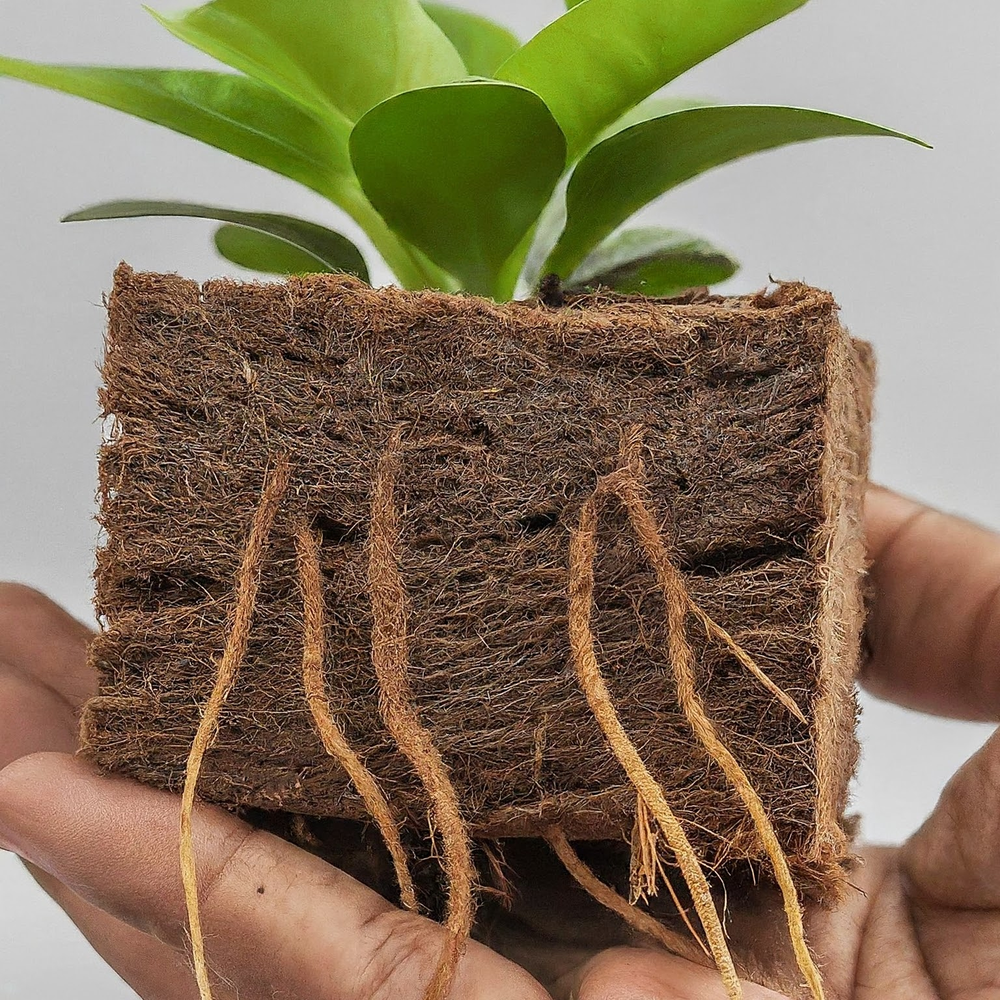

Gardening
Our cocopeat blocks are perfect for gardening enthusiasts. They improve soil structure, enhance water retention, and provide essential nutrients for healthy plant growth.
Soil Alternative
Mayuracoirs coco
Our cocopeat blocks are perfect for gardening enthusiasts. They improve soil structure, enhance water retention, and provide essential nutrients for healthy plant growth.
Mayuracoirs coco